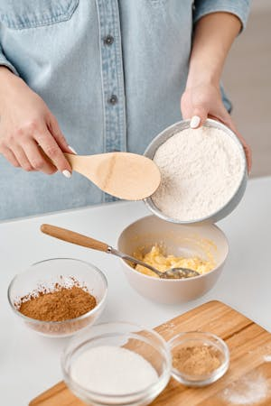
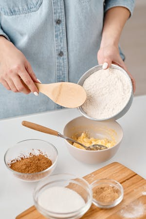

Cocinar postres de internet
Me gusta buscar nuevas recetas en internet, normalmente sigo los tutoriales en Youtube o TikTok y pruebo a hacer postres como pasteles, carlotas, galletas y cupcakes que despues comparto con mi familia.
Me gusta buscar nuevas recetas en internet, normalmente sigo los tutoriales en Youtube o TikTok y pruebo a hacer postres como pasteles, carlotas, galletas y cupcakes que despues comparto con mi familia.
